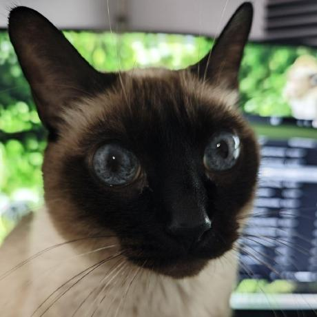

I was born in March 2015. Carlos adopted me but I quicky grew up and at the drop of a hat, i conquered the house and my ownERRRRR I MEAN my pet's heart 🥰
Nowadays I have more than 10 years but I still have plenty of energy and I'm still my pet's apple of his eyes. Although there's an intruder at home 😾 Look at her guilty pawz!